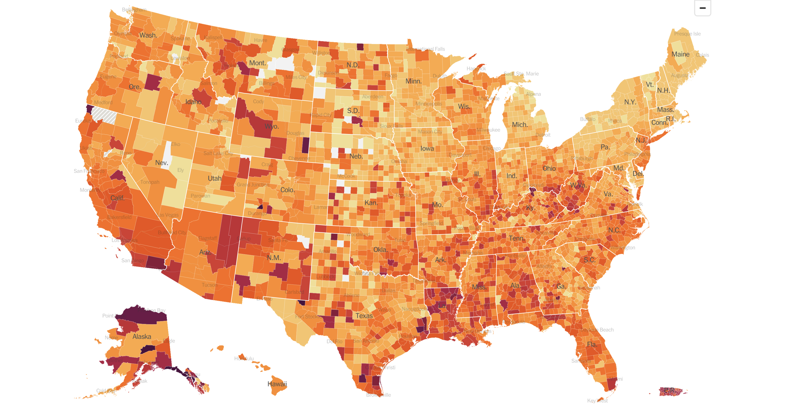

Seven Day Averages
Learning Goals
- Work with live data
- Get practice with CSV files and
csv.DictReader - Practice using dictionaries, lists and exceptions

背景
一份 popular way to track COVID cases is using a 7-day average. Some states only record cases once a 周, so using a 7-day average is much 更多 accurate than daily numbers. In this program, you will be using a New York Times repository of live, cumulative COVID data to calculate new daily cases, 创建一个 7-day average, and compare 本周’s average to the 上一页 周.
入门
- Log into cs50.dev using your GitHub account.
- Click inside the terminal window and execute
cd. - Execute
wget https://cdn.cs50.net/2022/fall/实验s/6/seven-day-average.zipfollowed by Enter in order to 下载 a zip calledseven-day-average.zipin your codespace. Take care not to overlook the space betweenwgetand the following URL, or any other character for that matter! - Now execute
unzip seven-day-average.zipto create 的文件夹中名为seven-day-average. - You 不再 need the ZIP file, so you can execute
rm seven-day-average.zipand respond with “y” followed by Enter at the prompt.
实现细节
The 分发代码 for this problem uses the python requests library to access the New York Times data stored in an accessible GitHub repository. This is stored as a CSV file. The program then uses DictReader to 阅读 the CSV file. It then creates a states list to use selected states for calculations.
You will be completing two functions, calculate and comparative_averages.
calculate
In calculate, you’ll be creating a dictionary, new_cases, which will keep track of 14 days of new COVID cases for each state. Keys in this dict will be the names of states, and the values for each of those keys will be the most recent 14 days of new cases. Since the data from the New York Times is cumulative, each day’s new cases must be calculated by subtracting the 上一页 day’s cases. To do this, you可能想要 to 创建一个 second dictionary, previous_cases, that keeps track of each day’s new cases as it’s calculated.
- 提示
- You can store 14 values in the list for each state by appending each new day’s data to end of the list and when the length of the list is greater than 14, removing the first element from the list.
Your calculate function should ultimately return the new_cases dictionary.
comparative_averages
Since your new_cases dictionary is passed to this function, you can calculate 本周’s 7-day average by summing up the last 7 elements in the list for a selected state, then dividing this by 7. You can 创建一个 7-day average 的 上一页周by doing the same with the first 7 elements in that same list.
- 提示
- Check out python list slicing to easily access a range of elements in a list. 例如,
values[3:5]will return the 3rd through 4th indexed elements in the listvalues.请注意， second index is not inclusive.
- Check out python list slicing to easily access a range of elements in a list. 例如,
You can then calculate the percent increase or decrease, by taking the difference of the two 7-day averages and dividing by last 周’s average.
- 提示
- 笔记 that you can detect division by zero by handling a
ZeroDivisionErrorwith atryandexceptblock. 例如:
try: numerator / denominator except ZeroDivisionError: ...Take a look at 第 3周in CS50P for 更多 on exceptions in Python.
- 笔记 that you can detect division by zero by handling a
Thought 问题
Why do you think some websites, such as The Washington Post post different values than your program generates for “Average daily new cases” and “Change in avg. daily cases in last 7 days” for some states, and the same values for others?
如何测试 Your Code
你的程序应该 behave per the例子below.
seven-day-average/ $ python seven-day-average.py
Choose one or more states to view average COVID cases.
Press enter when done.
State: Massachusetts
State: New York
State:
Seven-Day Averages
Massachusetts had a 7-day average of 1646 and an increase of 46%.
New York had a 7-day average of 7502 and a decrease of 1%.
seven-day-average/ $ python seven-day-average.py
Choose one or more states to view average COVID cases.
Press enter when done.
State: Maine
State: California
State:
Seven-Day Averages
California had a 7-day average of 20461 and a decrease of 8%.
Maine had a 7-day average of 196 and a decrease of 10%.
Do请注意， numbers will vary each day, since the data you are using is updated daily.
No check50 for this one!
To evaluate that the style of your code, type in the following at the $ prompt.
style50 seven-day-average.py
如何提交
No need to 提交! This is a 练习题.